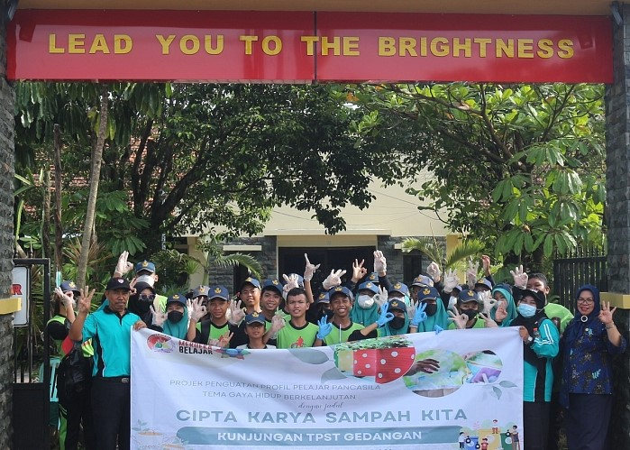
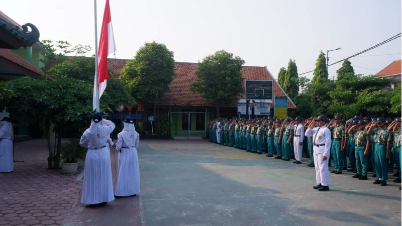
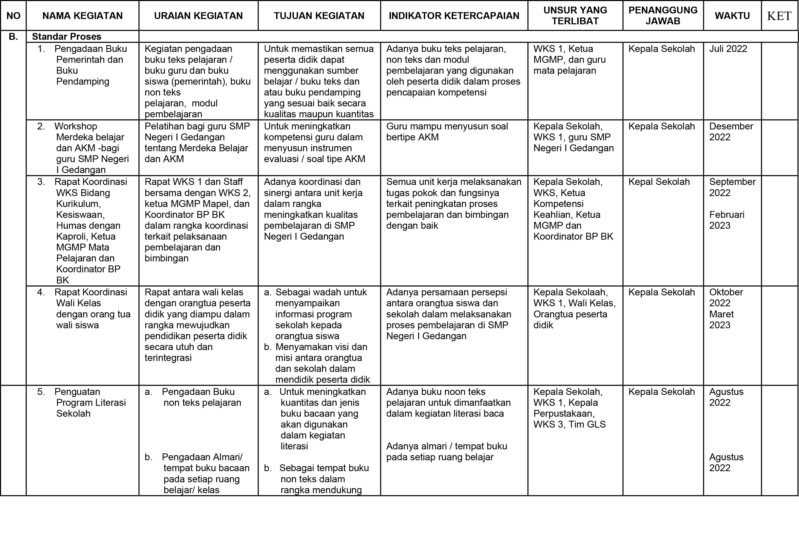
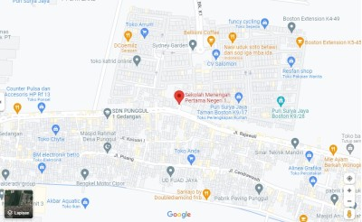

Assalamu’alaikum Wr. Wb.
Puji syukur kami panjatkan kepada Allah YME yang telah memberikan segala kenikmatan dan anugerah-Nya kepada
kita semua, sehingga sampai detik ini sekolah tercinta kita SMP Negeri 1 Gedangan masih berdiri dengan kualitas serta kuantitas yang semakin maju tentunya. Alhamdulillah atas dibukanya website baru dengan nama http://www.smpn1gedangan.sch.id sebagai salah satu sarana komunikasi dan informasi mengenai SMP Negeri 1 Gedangan Sidoarjo bersama Spensaged dan Ganspen sebagai sarana Facebooknya juga tambahan WhatsApp.com.
Dengan VISI ” Berkarakter dan Berprestasi” maka SMPN 1 Gedangan mempersiapkan peserta didiknya agar mampu mengantisipasi pesatnya perkembangan teknologi informasi dan komunikasi dibutuhkan kerjasama seluruh warga (baik Guru, Karyawan, Siswa, Wali Murid, serta Alumnusnya) SMP Negeri 1 Gedangan, maka dengan website baru ini diharapkan dapat menjalin komunikasi bukan hanya untuk intern sekolah bagi pendidik dan tenaga kependidikan, bagi peserta didik maupun pihak wali murid, bagi alumnus-alumnus SMP Negeri 1 Gedangan, namun juga steak holder yang ada di lingkungan masyarakat untuk lebih memajukan pendidikan.
Kami berusaha menyajikan website ini dengan sebaik-baiknya namun tiada gading yang tak retak tentunya masih banyak kekurangan dalam penyajian informasi maupun animasinya. Untuk itu kami juga memerlukan timbal balik dari pembaca, karena dengan kritikan dan saran dari luar kami dapat meningkatkan kualitas serta kuantitas pendidikan di sekolah kami. Semoga kehadiran website dari sekolah kami dapat memberikan manfaat bagi kami sendiri warga SMP Negeri 1 Gedangan, juga umumnya pembaca website tercinta.
SPENSAGED El número uno
Wassalamu’alaikum Wr, Wb.
Layanan
Berikut ini merupakan bentuk dari layanan khusus yang digunakan sebagai penunjang atau pendukung peserta didik. Yaitu Layanan Bimbingan dan Konseling, Layanan Perpustakaan, Layanan Kantin, Layanan Kesehatan, Layanan Transportasi, dan Layanan Asrama.
Visi dan Misi
Visi Sekolah adalah suatu kata yang memuat impian, cita-cita, nilai, masa depan dari satuan pendidikan atau sekolah. Visi dalam sekolah acuan dasar sekolah dalam melakukan kegiatan demi mencapai tujuan bersama dalam menggapai sekolah berprestasi.
Kegiatan

Di pagi hari yang cukup cerah SMP NEGERI 1 GEDANGAN mengadakan Upacara Peringatan Hari Kelahiran Pancasila, yang dipimpin oleh Ibu Yuniati Marhaeni, S.Pd, sebagai Inspektur UPACARA dan Anggota Osis sebagai Petugas Upacara.
Upacara peringatan Hari Kelahiran Pancasila adalah sebuah acara yang diadakan setiap tahun pada tanggal 1 Juni untuk memperingati kelahiran dan pentingnya Pancasila sebagai dasar negara Republik Indonesia. Pancasila adalah ideologi negara Indonesia yang merupakan pandangan tentang kehidupan berbangsa dan bernegara yang berlandaskan prinsip-prinsip dasar yang mencakup nilai-nilai moral, sosial, dan politik.
FASILITAS
Fasilitas yang dimiliki oleh SMP Negeri 1 Gedangan untuk menunjang pembelajaran :
- Terdapat 28 ruang kelas
- Terdapat 3 laboratorium yaitu laboratorium IPA, komputer dan bahasa
- Ruang Tata Usaha
- Tiga lapangan untuk olahraga
- Kantin sehat
- Outdor Learning
- Masjid
- Kamar mandi
Kegiatan Pembiasaan
PEMBIASAAN YANG BERKARAKTER
“ SPENSAGED .... SAGED .... SAGED .... YEAAHHH... JUARA “ yel-yel kebanggaan para siswa SMPN 1 Gedangan.
Sebuah kata-kata penyemangat yang selalu menghiasi setiap kegiatan siswa SMPN 1 Gedangan yang menggambarkan bahwa siswa SMPN 1 Gedangan akan berusaha saged atau bisa menuju juara baik juara karakter maupun juara prestasi seperti halnya gambaran visi misi SMPN 1 Gedangan “berkarakter dan berprestasi”
Berprestasi dan berkarakter merupakan visi misi menjadi cita-cita SMPN 1 Gedangan. Dua kata yang menggambarkan betapa pentingnya karakter dan ilmu. Lewat visi misi tersebut , SMPN 1 Gedangan berusaha untuk menciptakan generasi muda yang tidak hanya cerdas dalam hal ilmu melainkan cerdas dalam hati. Oleh sebab itu kata berkarakter diletakkan pada awal visi SMPN 1 Gedangan menunjukkan bahwa mencetak generasi penerus bangsa yang berkarakter merupakan tujuan utama.
Kegiatan pembiasaan merupakan kegiatan yang dilakukan guna mewujudkan visi misi SMPN 1 Gedangan tersebut. Kegiatan pembiasaan menjadi kegiatan unggulan SMPN 1 Gedangan yang selalu dilaksanakan setiap minggunya. Kegiatan tersebut mencakup kegiatan keagamaan hingga kegiatan kebangsaan. Hal ini guna mewujudkan generasi insani yang cinta kepada sang khalik sekaligus cinta terhadap negri Indonesia ini.
Sekali lagi, menuju sekolah yang berkarakter dan berprestasi dapat dilakukan melalui pembiasaan diri. Dengan kegiatan pembiasaan diri diharapkan para siswa siswi SMPN 1 Gedangan tumbuh menjadi pribadi yang berkarakter dan berprestasi.
BRAVO SMPN 1 GEDANGAN !!!!!!
Ekstrakurikuler
Kegiatan ekstrakurikuler merupakan salah satu alat pengenalan siswa pada hubungan sosial. Di dalamnya terdapat pendidikan pengenalan diri dan pengembangan kemampuan selain pemahaman materi pelajaran.
Selain OSIS sebagai induk kegiatan ektrakurikuler di sekolah, kegiatan ektrakurikuler lainnya adalah:
- Pramuka
- Paskibra
- Palang Merah Remaja (PMR)
- Basket
- Tari
- Bola Volly
- Basket
- BEC
- Karate
Program Kerja


Alamat
JL RAJAWALI NO 53
Telepon
0318912842
Emaill
smpngedangansda@gmail.com
Media Sosial